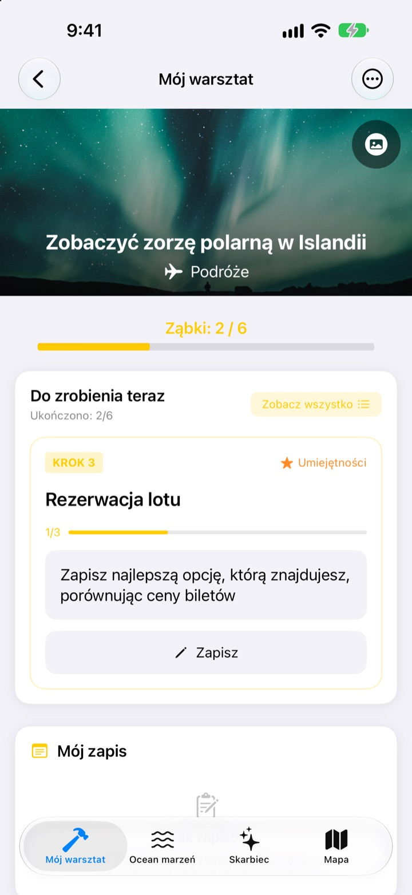
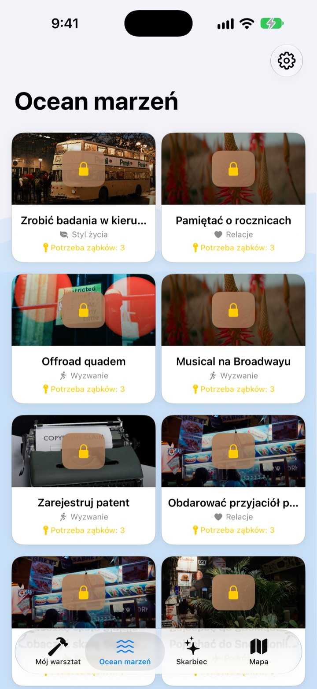
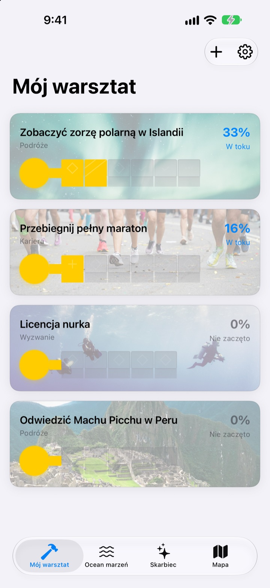
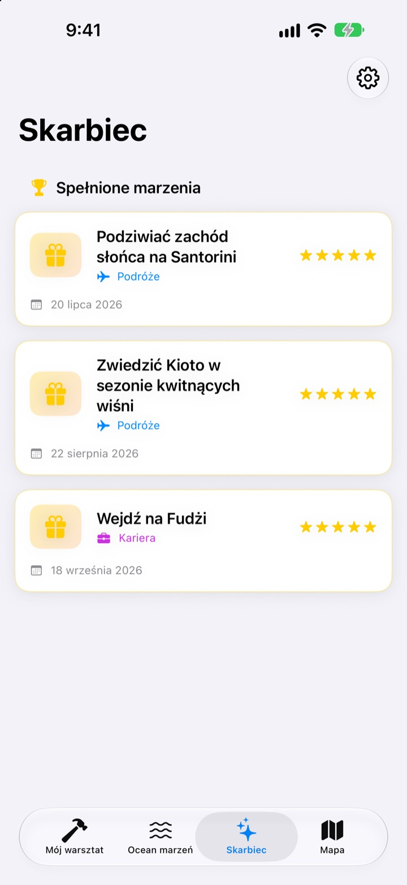

Nie tylko zapisuj
swoje marzenia
Wybierz marzenie, a małe kroki, które do niego prowadzą, staną się zębami klucza. Odpowiadaj na dzisiejszy krok pytanie po pytaniu, a skrzynia marzeń otworzy się, zanim się obejrzysz.
Kupujesz raz i masz wszystkie funkcje. Bez subskrypcji i reklam.

Dokończ klucz
Marzeniu o zorzy polarnej na Islandii zostały dwa kroki. Odpowiedz na każde pytanie jedną linijką (albo zostaw puste) i stuknij Dalej. Każdy ukończony krok wypełnia ząb, a pełny klucz otwiera skrzynię.
Zdarzyło ci się spisać listę marzeń i o niej zapomnieć?
„Zobaczyć zorzę polarną” to coś tak dużego, że nie wiadomo, od czego zacząć, więc latami wisi na liście. Dream Seeker dzieli to marzenie na kroki do zrobienia jeszcze dziś, jak sprawdzenie sezonu, odkładanie pieniędzy czy kupno biletów, i pokazuje tylko ten jeden, który jest teraz.
Ponad 590 marzeń do wyboru
Podróże, przeżycia, osiągnięcia, zdrowie, nauka i relacje. Marzenia z sześciu dziedzin dryfują w skrzyniach po Oceanie marzeń. Zabierz wybrane do warsztatu, a kroki do niego są już rozpisane.
Nie ma twojego? Stwórz własne: tytuł, dziedzina i potrzebne kroki.

Jeden ząb na raz, tyle, ile na dziś
W Moim warsztacie od razu widać, jak daleko jest klucz każdego marzenia. Bieżący krok jest na górze, a odpowiedzi na jego pytania wypełniają ząb.
Odpowiedzi i zdjęcia trafiają do Mojego zapisu, a na Osi postępów możesz przejrzeć całą drogę.

Spełnione marzenia do Skarbca, miejsca na mapę
Wypełnij wszystkie zęby i otwórz skrzynię. Spełnione marzenia trafiają z datą do Skarbca, a wstrzymane czekają tam, aż zechcesz do nich wrócić.
Marzenia związane z miejscem pojawiają się na mapie, więc widzisz wszystkie miejsca, do których chcesz pojechać.

Zacznij w trzech krokach
- 1
Wybierz marzenie
Stuknij skrzynię w Oceanie marzeń i wybierz Zabierz do warsztatu.
- 2
Odpowiedz na dzisiejszy krok
Odpowiadaj po kolei na pytania górnego kroku, a wypełnisz ząb.
- 3
Otwórz skrzynię
Gdy wszystkie zęby są wypełnione, klucz jest gotowy i skrzynia się otwiera.
Sześć dziedzin w Oceanie marzeń
- Podróże
- Zobaczyć zorzę polarną w Islandii · Podziwiać zachód słońca na Santorini
- Przeżycia
- Skok ze spadochronem · Lot paralotnią
- Osiągnięcia
- Przebiegnij pełny maraton · Trekking do bazy pod Everestem
- Zdrowie
- Zrobić 20 podciągnięć · Wyrzeźbić mięśnie brzucha
- Nauka
- Mówić płynnie po angielsku · Mówić płynnie po francusku
- Relacje
- Zwiedzić świat z rodzicami · Spędzić miesiąc na Czedżu z przyjaciółmi
Każda dziedzina ma prawie sto marzeń. Własne stworzysz w Moim warsztacie przyciskiem Dodaj nowe marzenie.
Jeden zakup i masz wszystko
Aplikacja
- Ponad 590 marzeń z pytaniami do każdego kroku
- Własne marzenia
- Mój zapis ze zdjęciami i Oś postępów
- Skarbiec i mapa
- Tryb rozwoju marzeń
- Przyszłe aktualizacje
Wesprzyj twórcę (dobrowolnie)
- Jeśli aplikacja ci pomaga, możesz w Ustawieniach zostawić mały napiwek
- Napiwek niczego nie odblokowuje. Bez niego wszystkie funkcje i tak są twoje
Jednorazowe napiwki, nie subskrypcja.
W aplikacji nic nie trzeba dokupować. Bez konta i reklam.
Częste pytania
Jak zacząć?
Na karcie Ocean marzeń stuknij skrzynię, która ci się podoba, i wybierz Zabierz do warsztatu. W Moim warsztacie odpowiadaj na pytania bieżącego kroku, a zęby będą się wypełniać jeden po drugim. Gdy wypełnisz wszystkie, otworzysz skrzynię.
Czy mogę dodać własne marzenie?
Tak. W Moim warsztacie stuknij Dodaj nowe marzenie i wpisz tytuł, dziedzinę i kroki, które do niego prowadzą.
Jak wstrzymać marzenie albo do niego wrócić?
W menu trwającego marzenia wybierz Zrezygnuj z marzenia, a trafi ono do Wstrzymanych marzeń w Skarbcu. Tam stuknij Zacznij od nowa, aby wróciło do warsztatu, albo Usuń na stałe, aby je skasować.
Czym jest tryb rozwoju marzeń?
To ekran, na którym prowadzisz marzenia jak wspinaczkę na szczyt. Włączysz go i wyłączysz w Ustawienia > Ekran. Możesz w nim śledzić terminy kroków i przeszkody, takie jak pieniądze i czas, jak w projekcie.
Nie widać zdjęć.
Część zdjęć w tle pobiera się z internetu. Sprawdź połączenie. Bez połączenia wyświetla się domyślny obrazek.
Czy mogę przenieść zapis na nowego iPhone’a?
Zapis jest przechowywany tylko na tym urządzeniu, bez konta i synchronizacji. Gdy odtworzysz nowego iPhone’a z kopii w iCloud lub na komputerze, przeniesie się razem z danymi innych aplikacji.
Czy w aplikacji są zakupy?
Nie. Mając aplikację, masz wszystkie funkcje. Napiwki w Ustawieniach są tylko dla tych, którzy chcą podziękować.
Czy moje marzenia i zapis są gdzieś wysyłane?
Nie. Nie ma konta, reklam ani narzędzi analitycznych. Twoje marzenia, zapis i zdjęcia zostają na urządzeniu.
Jak się z wami skontaktować?
Błędy, pomysły czy cokolwiek innego wyślij przez Wyślij opinię w Ustawieniach aplikacji albo wiadomością na Instagramie (@lee25_ios).
Pytania albo problemy? Napisz na leeo@kakao.com.